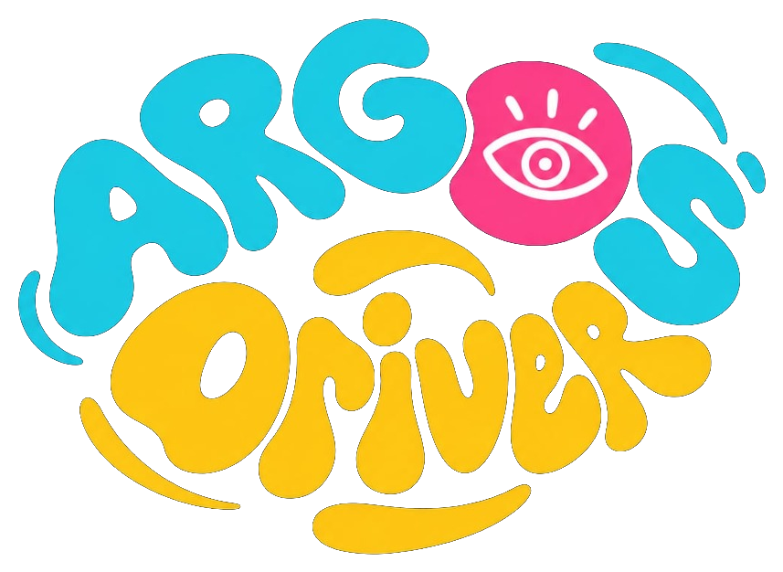

🛡️
SISTEMA ATIVO: MOTORISTA FOCADO
Velocidade Simulada
80 km/h
Distância Percorrida sem Ver a Pista
0.0 m

Sentinela Veicular Anti-Fadiga e Distração com Inteligência Artificial. Utiliza visão computacional para monitorar micro-sonos (fechamento prolongado dos olhos), bocejos de fadiga e desatenção na pista (olhar para o celular ou para os lados).
Olhos abertos na pista e cabeça alinhada com o pára-brisa.
Abertura labial prolongada (MAR elevado), alertando cansaço prévio.
Olhos fechados por mais de 1.5 segundo. Disparo de buzina e sirene!